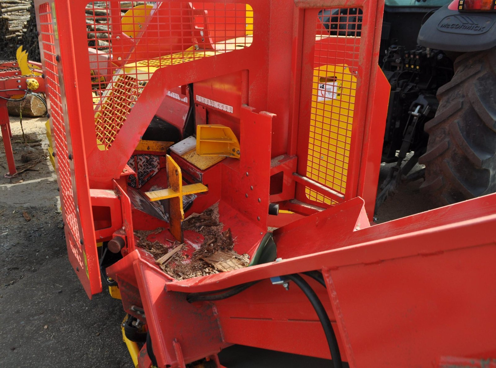
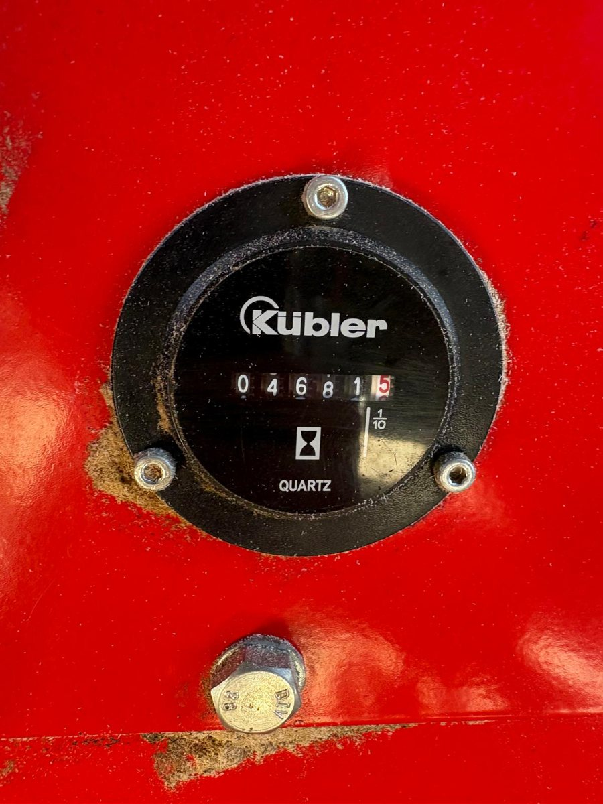
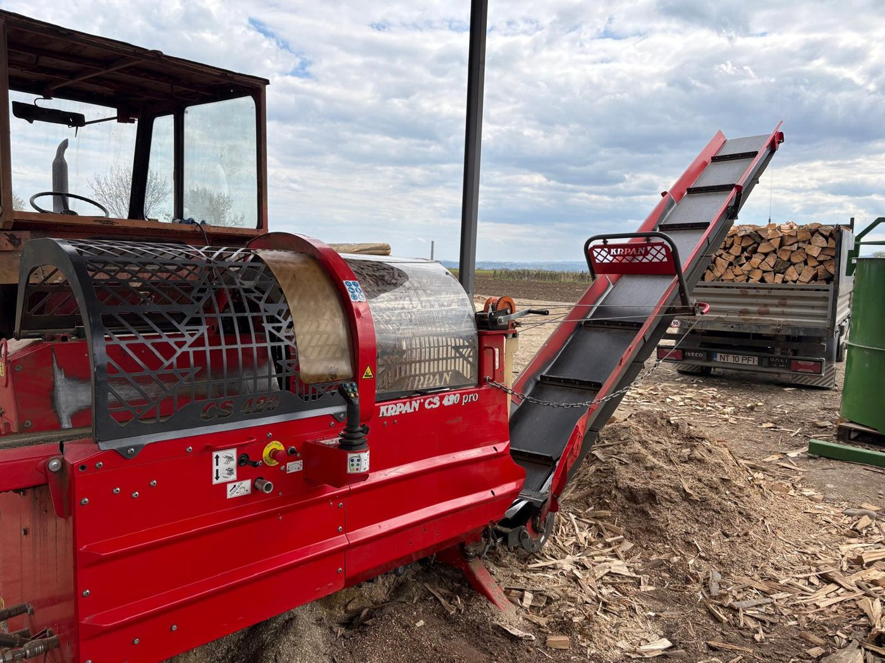
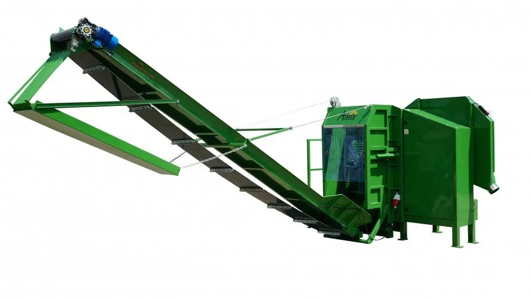
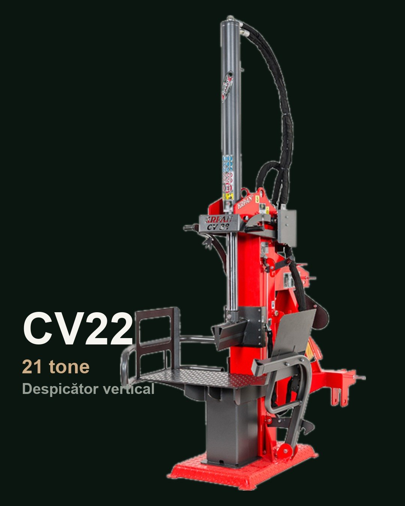
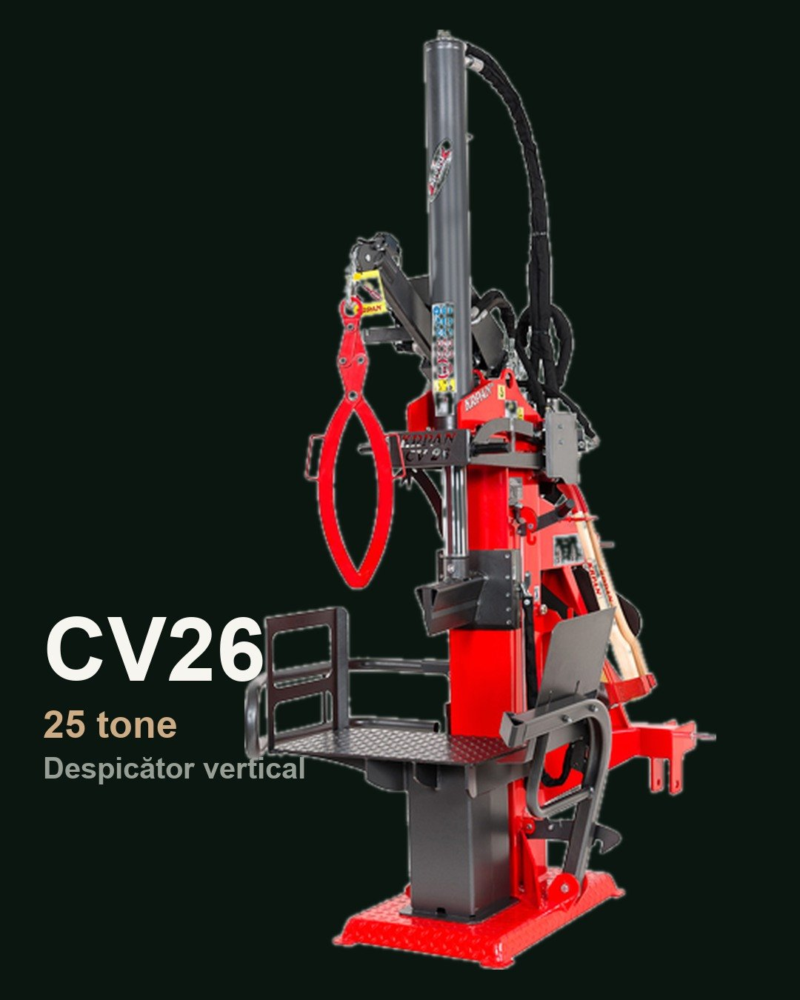
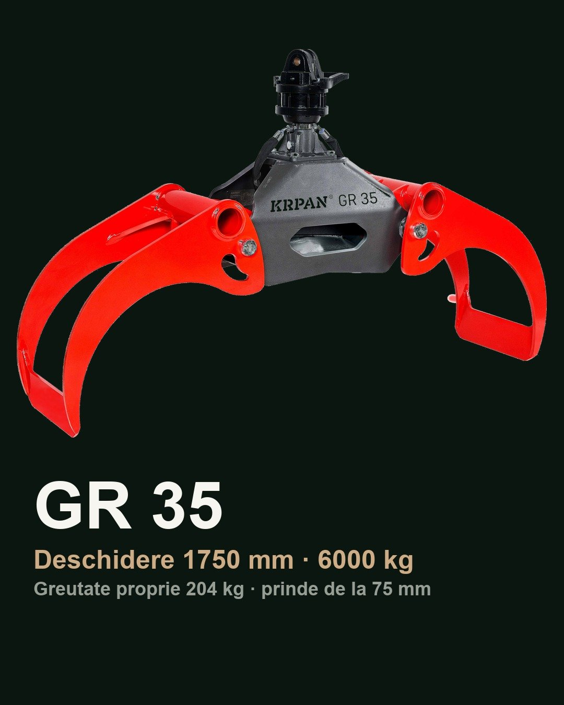
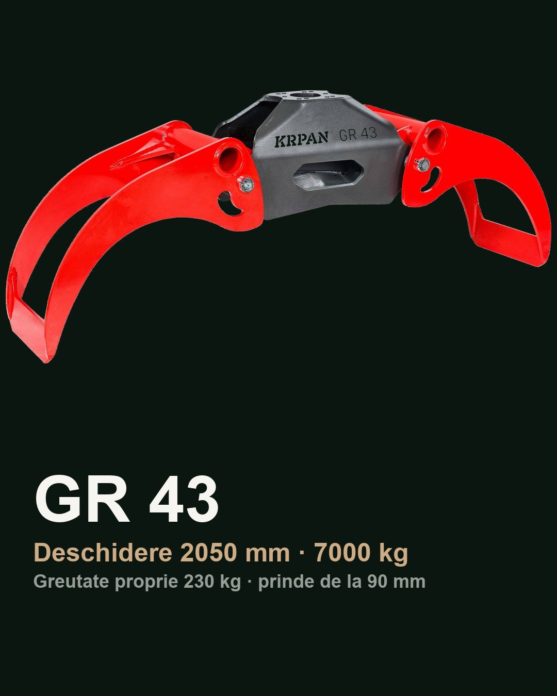

Niro Stahl Impex · Hațeg, Hunedoara site realizat de mine
Utilaje forestiere: reclame care spun cui i se potrivește utilajul, nu doar ce specificații are
Importator de utilaje forestiere și agricole din 2010. Cumpărătorul de despicător sau de linie de tăiat nu are nevoie de un catalog, are nevoie să știe dacă modelul i se potrivește la volumul și diametrul cu care lucrează. Cele zece reclame de mai jos au rulat în contul Meta al clientului în iulie și august 2026, cu textul și imaginile de aici.
N
Niro StahlSponsorizat
14 iul. 2026Ai tractor de 40–100 CP cu PTO 540? Atunci ai deja sursa de putere ca să treci de la munca manuală la un flux mecanizat.
XYLOG 410 se prinde în trei puncte, merge pe PTO 540 și face amândouă operațiile — taie cu circular Ø1000 mm cu dinți din carbură (merge și pe lemn uscat, tare) și despică cu 16 T, cu AUTOSPEED care adaptează automat puterea la rezistența lemnului.
Lungimi comerciale 200–500 mm, pene interschimbabile 2/4/6/8, pliabil pentru transport între locații.
Familia are 4 niveluri — intri exact la bugetul potrivit, iar dacă lemnul tău cere mai mult, îți spunem direct.
Finanțare prin credit sau leasing, vizionare la Hațeg. Trimite-ne tractorul și diametrele — primești recomandarea și oferta.

N
Niro StahlSponsorizat
14 iul. 2026O linie de tăiat și despicat nouă vine la comandă din fabrică. Adică peste luni. Sezonul tău nu așteaptă atât.
CS 420 Pro e disponibilă acum: an 2019, 4690 de ore de lucru — publicate transparent, nu ascunse. Taie până la 42 cm diametru, despică cu 18 tone, încarcă pe bandă telescopică de 5 m, totul din joystick.
Verificată de noi înainte de recomandare. Factură de importator, service și piese asigurate, vizionare la Hațeg. Nu un anunț de la un necunoscut.
E un singur exemplar și stocul de utilaje rulate se schimbă des. Disponibilitatea, starea și prețul se confirmă la ofertă.

N
Niro StahlSponsorizat
18 iul. 2026Trei operațiuni — tăiat, despicat, încărcat — într-un singur utilaj, comandat din joystick de un singur om.
CS 420 Pro e disponibilă acum: an 2019, 4690 de ore de lucru — publicate transparent, nu ascunse. Taie până la 42 cm diametru, despică cu 18 tone, încarcă pe bandă telescopică de 5 m.
Verificată de noi înainte de recomandare. Factură de importator, service și piese asigurate, vizionare la Hațeg.
E un singur exemplar și stocul de utilaje rulate se schimbă des. Disponibilitatea, starea și prețul se confirmă la ofertă.

N
Niro StahlSponsorizat
14 iul. 2026Înainte să întrebi de preț, răspunde la trei întrebări:
1. Ai trifazic 400 V la punctul de lucru?
2. Buștenii tăi sunt între 10 și 45 cm?
3. Produci constant — nu doar pentru tine, iarna?
Dacă ai trei de DA, Amix LP-450SP merită o discuție: tăiere cu circular Ø1100 și despicare 22 T în 2–16 părți fără schimb de cuțit, într-un singur flux electric, cu lemnul ieșind pe conveyor. Dacă ai un NU — ți-o spunem direct și îți recomandăm altceva din gamă. Un utilaj de 6,5 metri cumpărat greșit e o greșeală pe care n-o repari ieftin.
Importăm utilaje forestiere din 2010. Service & piese, finanțare credit/leasing, vizionare la Hațeg. Spune-ne diametrele, lungimile și volumul pe zi — primești o recomandare, nu un pliant.

N
Niro StahlSponsorizat
10 aug. 2026Diametrul bușteanului decide utilajul. Bugetul vine după.
O linie luată prea mică te blochează exact în vârf de sezon, când ai comenzile pe masă. Una prea mare îți ține banii imobilizați jumătate de an. Diferența o vezi abia în al doilea sezon, când nu mai poți schimba nimic.
LP-450SP e calibrat pe bușteni de 10–45 cm. Despicare 22 de tone, circular Ø1100, ciclu de șase secunde, conveyor de patru metri. Reglezi în 2, 4, 8 sau 16 părți cu același cuțit, pe înălțime, fără să oprești linia. Conform Amix, 4–10 mc/h, în funcție de esență și diametru. Pornește de la 45.000 €.
Alimentatorul se discută separat — configurația se stabilește la ofertare, după ce ne spui ce lucrezi.
Se potrivește dacă: bușteni 10–45 cm · trifazic 400 V · produci constant.
Spune-ne diametrele și volumul zilnic. Îți spunem cinstit dacă e utilajul tău.
N
Niro StahlSponsorizat · reclamă video
11 aug. 2026Nu dăm ofertă la oricine întreabă.
Linia Amix LP-450SP începe de la 45.000 €, în funcție de configurație. Îți spunem suma din prima, ca să nu pierdem timpul niciunul.
Dacă are sens pentru volumul tău, vrem să știm trei lucruri înainte de ofertă: ce diametre tai, câți metri cubi scoți într-o zi și dacă ai trifazic 400 V în hală. Dacă răspunsurile nu se potrivesc cu LP-450SP, îți spunem noi, înainte să comanzi un utilaj care nu te ajută.
Dacă se potrivesc, discutăm despre o linie care ia bușteanul întreg, îl prinde automat, îl taie cu circularul Ø1100 și îl despică cu 22 de tone în 2 până la 16 părți. Ciclu de șase secunde. Lemnul iese pe conveyorul de patru metri, gata de încărcat.
Utilaj nou, fabricație Amix, Polonia. Importator din 2010, cu service și piese. Finanțare prin credit sau leasing. Îl poți vedea lucrând la Hațeg înainte să decizi.
Spune-ne diametrele și volumul. Restul îți spunem noi.
N
Niro StahlSponsorizat
21 aug. 2026Știi bușteanul ăla de fag cu nod, în care despicătorul se oprește și scârțâie? Cel pe care-l dai deoparte „pentru mai târziu"?
Pentru el există CV22: 21 de tone de forță, direct de la priza de putere a tractorului tău (PTO 540). Despică vertical, bușteanul stă jos, nu-l ridici și trece prin esență tare acolo unde un despicător de gospodărie cedează. Cu rampă extensie și pană în 4 bucăți.
Ai tractor cu PTO 540? Atunci ai deja motorul; îți lipsește doar unealta.
Utilaj rulat, verificat de noi, cu factură de importator și vizionare la Hațeg. Disponibilitatea, starea și prețul se confirmă la ofertă.

N
Niro StahlSponsorizat
21 aug. 2026În fiecare grămadă există bușteanul ăla: stejar sau fag bătrân, gros, cu noduri, pe care l-ai ocolit de trei ori pentru că știi că despicătorul se blochează în el.
CV26 e construit pentru el: 25 de tone de forță, maximul din seria verticală, direct de la priza de putere a tractorului tău (PTO 540). Despică pe verticală, deci bușteanul greu rămâne jos nu-l ridici tu. Cu rampă extensie și pană în 4 bucăți.
Ce despică greu la alții, la 25 de tone trece.
Utilaj rulat, verificat de noi înainte de recomandare, cu factură de importator și vizionare la Hațeg. Disponibilitatea, starea și prețul se confirmă la ofertă.

N
Niro StahlSponsorizat
12 aug. 2026Fă un calcul simplu: fiecare kilogram de graifer e un kilogram de lemn pe care macaraua ta nu-l mai ridică. La zeci de curse pe zi, un graifer greu te costă în fiecare zi.
GR 35 cântărește 204 kg și încarcă până la 6000 kg. Deschidere de 1750 mm și prindere de la 75 mm diametru: merge și pe bușteni, și pe material subțire, mixt.
Pentru macarale medii, graiferul „cel mai mare" e o greșeală cel corect e cel care îți lasă sarcina utilă pentru marfă. Ce macara ai? Tipul de prindere îl confirmăm noi, înainte de plată.
Utilaj rulat, verificat de noi, cu factură de importator și vizionare la Hațeg. Disponibilitatea, starea și prețul se confirmă la ofertă.

N
Niro StahlSponsorizat
12 aug. 2026Fiecare cursă în care graiferul prinde puțin e timp pierdut. Fiecare zi cu graiferul defect e un camion care stă.
GR 43 rezolvă ambele: deschidere de 2050 mm, deci prinde bușteni groși și pachete voluminoase dintr-o mișcare, și capacitate de 7000 kg la o greutate proprie de doar 230 kg. Sarcina utilă a macaralei rămâne pentru lemn, nu pentru graifer.
Ce macara ai? Există diferite tipuri de prindere, îți confirmăm compatibilitatea cu rotatorul și macaraua ta înainte să plătești.
Utilaj rulat, verificat de noi înainte de recomandare, cu factură de importator și vizionare la Hațeg. Disponibilitatea, starea și prețul se confirmă la ofertă.

Site-ul vechi funcționa ca un catalog. Problema reală a cumpărătorului de utilaj scump nu e „ce modele aveți", e „cum aleg pe cel potrivit fără să greșesc o investiție mare". Pagina nouă pornește de acolo.